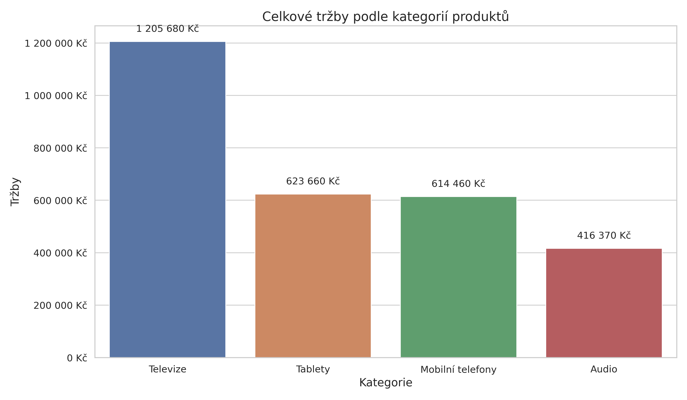
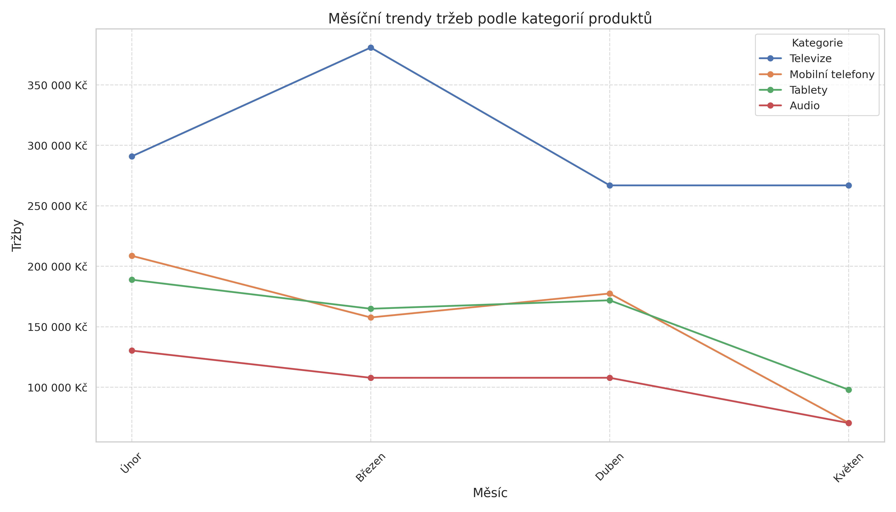
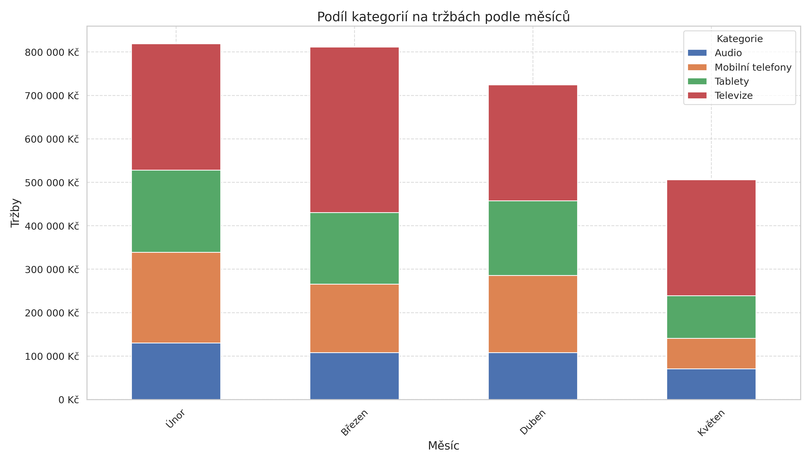
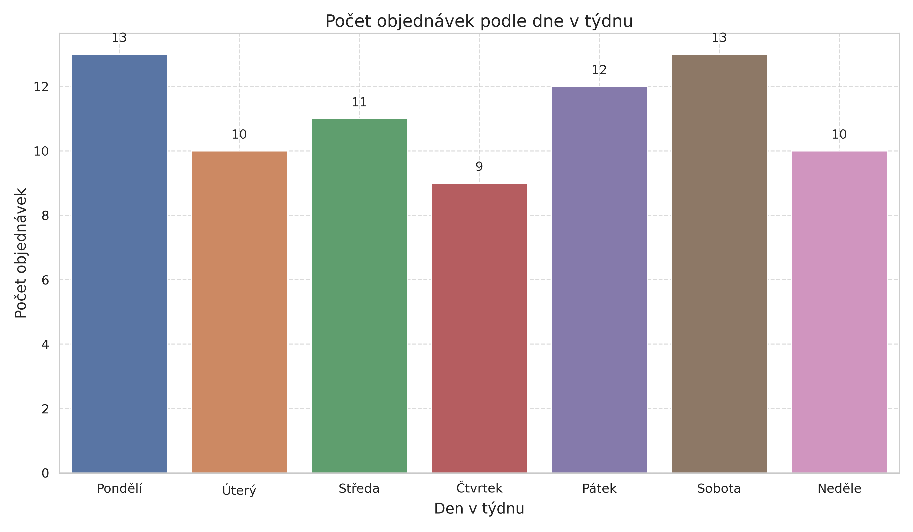
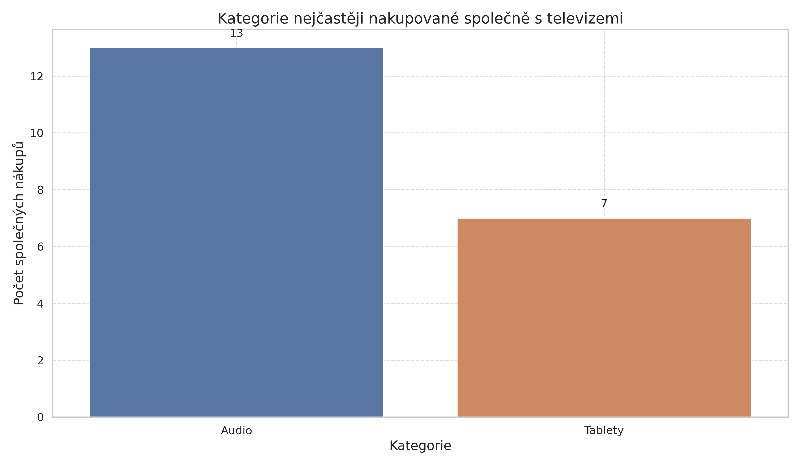
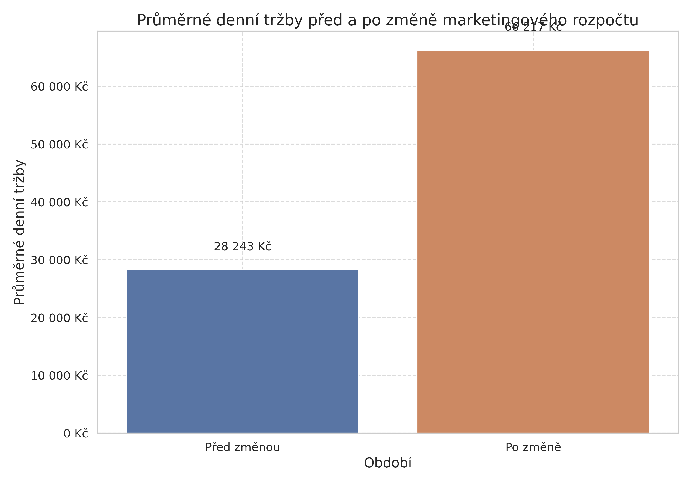
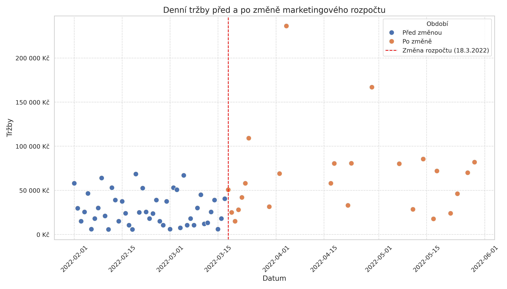

1. Kategorie s nejvyššími tržbami
Odpověď: Kategorie Televize má nejvyšší tržby (1 205 680 Kč) a zůstává nejvýnosnější kategorií ve všech sledovaných měsících.
Analýza celkových tržeb podle kategorií produktů ukázala, že kategorie Televize jednoznačně dominuje s celkovými tržbami 1 205 680 Kč. Na druhém místě jsou Tablety (623 660 Kč), následované kategorií Mobilní telefony (614 460 Kč) a Audio (416 370 Kč).

Při analýze měsíčních trendů jsme zjistili, že kategorie Televize zůstává nejvýnosnější kategorií ve všech sledovaných měsících (únor až květen 2022). Nejvyšší tržby v kategorii Televize byly zaznamenány v březnu 2022 (380 900 Kč).

Podíl jednotlivých kategorií na celkových tržbách se v průběhu měsíců mírně mění, ale Televize zůstávají dominantní kategorií ve všech měsících.

2. Den v týdnu s nejvyšším počtem objednávek
Odpověď: Pondělí a sobota mají shodně nejvyšší počet objednávek (13).
Analýza počtu objednávek podle dne v týdnu ukázala, že pondělí a sobota mají shodně nejvyšší počet objednávek (13). Následuje pátek (12 objednávek), středa (11 objednávek), úterý a neděle (shodně 10 objednávek) a čtvrtek (9 objednávek).

3. Kategorie nejčastěji nakupovaná společně s televizemi
Odpověď: Kategorie Audio je nejčastěji nakupována společně s televizemi (13 společných nákupů).
Analýza objednávek obsahujících produkty z kategorie Televize ukázala, že nejčastěji jsou s televizemi nakupovány produkty z kategorie Audio (13 společných nákupů). Těsně následuje kategorie Mobilní telefony (12 společných nákupů) a s větším odstupem kategorie Tablety (7 společných nákupů).

4. Dopad zvýšeného marketingového rozpočtu
Odpověď: Po zvýšení rozpočtu na online marketing došlo k výraznému nárůstu průměrných denních tržeb o 134,45 % (z 28 243,56 Kč na 66 217,08 Kč).
Analýza dopadu zvýšeného marketingového rozpočtu od 18. března 2022 ukázala významný nárůst průměrných denních tržeb o 134,45 %. Průměrné denní tržby vzrostly z 28 243,56 Kč před změnou rozpočtu na 66 217,08 Kč po změně.

Také došlo k nárůstu průměrného denního počtu objednávek o 37,50 % (z 1,00 na 1,38 objednávky denně) a průměrné hodnoty objednávky o 70,51 % (z 28 243,56 Kč na 48 157,88 Kč).

Zajímavé je, že při analýze průměrných denních tržeb podle kategorií jsme zaznamenali pokles ve všech kategoriích. Tento rozpor s celkovým nárůstem tržeb může být způsoben tím, že po změně rozpočtu se zvýšil počet objednávek obsahujících více položek z různých kategorií, což zvýšilo celkové tržby, ale snížilo průměrné denní tržby v jednotlivých kategoriích.